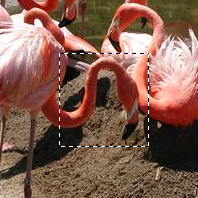
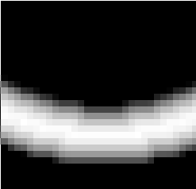
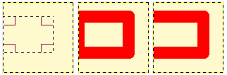

Figura 16.27. Exemplo de criar uma borda a partir de uma seleção

Uma imagem com uma seleção

Depois de “Criar Borda”
O comando cria uma nova seleção ao longo do limite da seleção na imagem em que você está trabalhando. O limite da seleção é usado como uma forma e a nova seleção é criada ao seu redor. Você entra com a largura da borda, em pixels ou outra unidade, na janela de diálogo. Metade da nova borda ficará dentro da área selecionada originalmente e a outra metade fora dela.
You can access this command from the main menu through → .
If there is no selection, this menu entry is disabled.
Two conditions must be respected to use this command:
-
The image must have an alpha channel.
-
The original image must be created with the Antialiasing option checked in the selection tool that is used.
- Criar borda da seleção por
-
Entre com a largura da borda da seleção na caixa de diálogo. O padrão é em pixels, mas você pode escolher outras unidades no menu suspenso.
- Border Style
-
-
Hard: this option does not keep anti-aliasing. This can be useful in some cases.
-
Smooth: this option keeps anti-aliasing. Note that “Smooth” does not create any anti-aliasing. That's why anti-aliasing must be added when creating the original selection. This option is the best one.
-
Feathered: this option does the same things as “Hard”, but instead of the resulting border being fully selected, it fades outwards. The result is not very good; if you want a feathered border, it's better to use one of the other modes, and then feather the result. It exists for historical reasons.
Figura 16.29. Border Style Comparison

“Hard” option. Selection editor, zoom 800%

“Smooth” option. Selection editor, zoom 800%

“Feathered” option. Selection editor, zoom 800%
-
- Selected areas continue outside the image
-
Com esta seleção desabilitada, o limite da uma seleção (geralmente um retângulo) permanecerá sem modificações se ele estiver alinhado com o limite da imagem, nenhuma seleção será criada ao seu redor.
Figura 16.30. Select border with and without “Selected areas continue outside the image”

Selecionar uma borda sem (ao centro) e com (à direita) “Não considerar a seleção fora da imagem”

Mesmas seleções preenchidas com vermelho